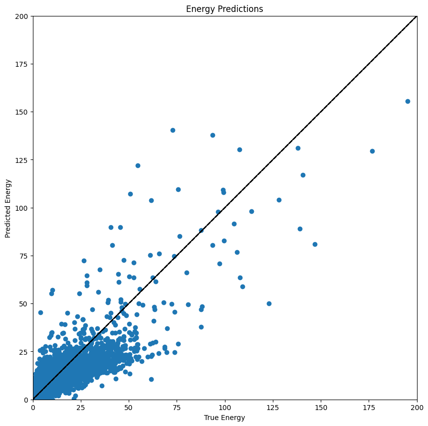
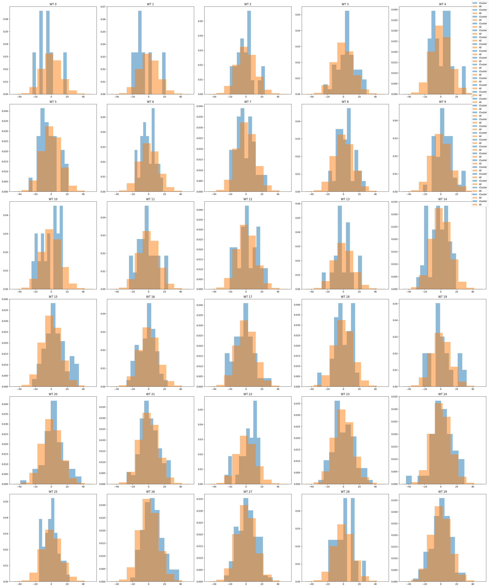

import numpy as np
import pandas as pd
import xarray as xr
import matplotlib.pyplot as plt
from bluemath_tk.core.io import load_model
Load Data#
centroids_df = pd.read_csv(f'outputs/KMA/centroids_kma_sorted.csv', index_col=0)
nearest_centroids_df = pd.read_csv(f'outputs/KMA/nearest_centroids_df_kma_sorted.csv', index_col=0)
nearest_centroids_idx= pd.read_csv(f'outputs/KMA/nearest_centroids_idxs_kma_sorted.csv', index_col=0)
centroids_df
| dp0g1 | dp0g2 | dp0g3 | dp0g4 | dp1g1 | dp1g2 | dp1g3 | dp1g4 | hs0g1 | hs0g2 | ... | wd0g4 | ws0g1 | ws0g2 | ws0g3 | ws0g4 | hs_totalg1 | hs_totalg2 | hs_totalg3 | hs_totalg4 | hs_total_avg | |
|---|---|---|---|---|---|---|---|---|---|---|---|---|---|---|---|---|---|---|---|---|---|
| kma_bmus | |||||||||||||||||||||
| 126 | 233.002170 | 221.321380 | 152.00706 | 134.159330 | 143.355090 | 142.964300 | 168.186000 | 158.156460 | 3.764003 | 3.629424 | ... | 121.572744 | 20.117091 | 21.585839 | 22.759026 | 16.327751 | 5.696502 | 6.532300 | 9.655147 | 7.236809 | 7.280189 |
| 95 | 110.915700 | 121.615440 | 131.48915 | 125.326550 | 171.738500 | 176.147140 | 179.511800 | 149.725740 | 3.011760 | 2.737005 | ... | 116.437468 | 17.181788 | 16.220901 | 10.540514 | 6.634176 | 6.468140 | 6.189592 | 5.146850 | 2.917222 | 5.180451 |
| 119 | 239.469540 | 229.678400 | 200.67264 | 168.869980 | 144.088680 | 134.448260 | 126.495400 | 125.572174 | 1.848053 | 1.964192 | ... | 196.820829 | 12.015882 | 12.440818 | 13.894698 | 12.470560 | 3.993667 | 4.270995 | 5.527408 | 5.052266 | 4.711084 |
| 23 | 45.279793 | 48.207623 | 51.42470 | 49.475723 | 106.365135 | 103.271100 | 103.745010 | 101.121056 | 2.071686 | 2.289286 | ... | 33.846004 | 12.541742 | 13.259048 | 14.211601 | 12.397095 | 3.854738 | 4.237133 | 5.138799 | 5.167538 | 4.599552 |
| 25 | 227.889700 | 79.176600 | 76.99772 | 66.336464 | 106.110920 | 99.773710 | 101.201170 | 105.408750 | 1.516057 | 1.617552 | ... | 56.261138 | 11.229962 | 11.792700 | 14.492733 | 13.210695 | 3.214924 | 3.835685 | 5.493859 | 5.359910 | 4.476095 |
| ... | ... | ... | ... | ... | ... | ... | ... | ... | ... | ... | ... | ... | ... | ... | ... | ... | ... | ... | ... | ... | ... |
| 7 | 129.754930 | 131.286100 | 141.47688 | 137.584690 | 125.913490 | 126.622600 | 132.823520 | 133.049120 | 0.245613 | 0.254162 | ... | 140.521470 | 3.989072 | 4.070567 | 4.346205 | 3.952215 | 0.962753 | 0.970673 | 1.012843 | 0.971910 | 0.979545 |
| 2 | 84.718864 | 78.244900 | 68.97585 | 147.000780 | 107.101746 | 105.422554 | 101.077860 | 100.592430 | 0.241072 | 0.201159 | ... | 214.105300 | 3.994731 | 3.845873 | 3.512844 | 3.096157 | 0.992422 | 0.967658 | 0.963963 | 0.926580 | 0.962656 |
| 71 | 79.777940 | 74.332664 | 229.75775 | 103.616250 | 125.870670 | 123.724380 | 117.950740 | 124.246210 | 0.157817 | 0.151672 | ... | 192.235450 | 3.740037 | 3.697417 | 4.536764 | 4.667119 | 0.859853 | 0.856811 | 1.026395 | 1.048115 | 0.947793 |
| 41 | 229.061810 | 213.823240 | 84.12847 | 88.466440 | 109.591460 | 102.842120 | 99.525116 | 101.446655 | 0.127760 | 0.142438 | ... | 110.126198 | 3.618493 | 3.749510 | 4.249165 | 3.622366 | 0.765047 | 0.841844 | 1.051557 | 1.037392 | 0.923960 |
| 72 | 119.436320 | 130.708500 | 167.02615 | 181.189420 | 118.177680 | 117.647450 | 105.892930 | 103.413240 | 0.277971 | 0.238832 | ... | 191.561499 | 4.139027 | 4.049482 | 4.211432 | 4.623236 | 0.927817 | 0.868182 | 0.807793 | 0.807809 | 0.852901 |
144 rows × 37 columns
# centroids_df= centroids_df.drop(columns=['hsg_avg'])
# centroids_df= centroids_df.drop(columns=['hs_sum_g1'])
centroids_df= centroids_df.drop(columns=['hs_totalg1', 'hs_totalg2', 'hs_totalg3', 'hs_totalg4', 'hs_total_avg'])
centroids_df.head()
| dp0g1 | dp0g2 | dp0g3 | dp0g4 | dp1g1 | dp1g2 | dp1g3 | dp1g4 | hs0g1 | hs0g2 | ... | tp1g3 | tp1g4 | wd0g1 | wd0g2 | wd0g3 | wd0g4 | ws0g1 | ws0g2 | ws0g3 | ws0g4 | |
|---|---|---|---|---|---|---|---|---|---|---|---|---|---|---|---|---|---|---|---|---|---|
| kma_bmus | |||||||||||||||||||||
| 126 | 233.002170 | 221.321380 | 152.00706 | 134.159330 | 143.355090 | 142.96430 | 168.18600 | 158.156460 | 3.764003 | 3.629424 | ... | 12.545710 | 11.602006 | 286.967683 | 273.318162 | 136.667012 | 121.572744 | 20.117091 | 21.585839 | 22.759026 | 16.327751 |
| 95 | 110.915700 | 121.615440 | 131.48915 | 125.326550 | 171.738500 | 176.14714 | 179.51180 | 149.725740 | 3.011760 | 2.737005 | ... | 13.647295 | 11.406211 | 88.660108 | 99.873020 | 113.711939 | 116.437468 | 17.181788 | 16.220901 | 10.540514 | 6.634176 |
| 119 | 239.469540 | 229.678400 | 200.67264 | 168.869980 | 144.088680 | 134.44826 | 126.49540 | 125.572174 | 1.848053 | 1.964192 | ... | 9.266826 | 9.191651 | 258.211884 | 248.080310 | 220.037305 | 196.820829 | 12.015882 | 12.440818 | 13.894698 | 12.470560 |
| 23 | 45.279793 | 48.207623 | 51.42470 | 49.475723 | 106.365135 | 103.27110 | 103.74501 | 101.121056 | 2.071686 | 2.289286 | ... | 9.426130 | 9.334442 | 22.537725 | 28.418356 | 27.819568 | 33.846004 | 12.541742 | 13.259048 | 14.211601 | 12.397095 |
| 25 | 227.889700 | 79.176600 | 76.99772 | 66.336464 | 106.110920 | 99.77371 | 101.20117 | 105.408750 | 1.516057 | 1.617552 | ... | 8.883035 | 8.857621 | 330.045123 | 285.257569 | 52.326244 | 56.261138 | 11.229962 | 11.792700 | 14.492733 | 13.210695 |
5 rows × 32 columns
nearest_centroids_idx
| kma_bmus | kma_bmus_orig | kma_bmus_sorted | |
|---|---|---|---|
| 1980-01-01 | 140 | 140 | 82 |
| 1980-01-02 | 106 | 106 | 67 |
| 1980-01-03 | 50 | 50 | 57 |
| 1980-01-04 | 28 | 28 | 106 |
| 1980-01-05 | 11 | 11 | 64 |
| ... | ... | ... | ... |
| 2023-12-27 | 33 | 33 | 26 |
| 2023-12-28 | 38 | 38 | 22 |
| 2023-12-29 | 102 | 102 | 125 |
| 2023-12-30 | 78 | 78 | 56 |
| 2023-12-31 | 78 | 78 | 56 |
16071 rows × 3 columns
nearest_centroids_df
| dp0g1 | dp0g2 | dp0g3 | dp0g4 | dp1g1 | dp1g2 | dp1g3 | dp1g4 | hs0g1 | hs0g2 | ... | wd0g1 | wd0g2 | wd0g3 | wd0g4 | ws0g1 | ws0g2 | ws0g3 | ws0g4 | kma_bmus | kma_bmus_sorted | |
|---|---|---|---|---|---|---|---|---|---|---|---|---|---|---|---|---|---|---|---|---|---|
| 1980-01-01 | 11.369049 | 23.596039 | 36.762910 | 42.303160 | 83.274260 | 87.456085 | 146.435000 | 30.113525 | 0.504218 | 1.092657 | ... | 343.059347 | 357.431806 | 28.793336 | 46.879320 | 6.794482 | 8.926181 | 10.832924 | 8.401535 | 140 | 82 |
| 1980-01-02 | 311.676700 | 324.960140 | 6.120483 | 8.173706 | 171.626460 | 85.963380 | 70.231690 | 74.062805 | 1.109726 | 1.118281 | ... | 313.736234 | 318.592456 | 336.293129 | 346.699814 | 9.916078 | 10.299135 | 12.306847 | 11.604951 | 106 | 67 |
| 1980-01-03 | 353.975900 | 343.836150 | 345.953600 | 333.084840 | 70.085420 | 62.904877 | 50.527283 | 54.089110 | 0.309096 | 0.289012 | ... | 0.701913 | 349.223979 | 339.195547 | 327.400677 | 4.958947 | 5.421560 | 6.140924 | 7.739953 | 50 | 57 |
| 1980-01-04 | 66.610535 | 84.603670 | 70.481750 | 46.614290 | 70.112460 | 64.404175 | 50.212250 | 44.358154 | 0.182427 | 0.306896 | ... | 98.817560 | 99.419199 | 68.972997 | 47.526108 | 4.228852 | 4.961302 | 6.692020 | 7.123397 | 28 | 106 |
| 1980-01-05 | 318.671420 | 313.440200 | 358.071900 | 33.345734 | 173.840640 | 156.619570 | 54.617310 | 92.664430 | 1.289812 | 1.219720 | ... | 318.105656 | 318.722730 | 320.125084 | 16.728776 | 10.617166 | 10.577474 | 10.336028 | 12.739545 | 11 | 64 |
| ... | ... | ... | ... | ... | ... | ... | ... | ... | ... | ... | ... | ... | ... | ... | ... | ... | ... | ... | ... | ... | ... |
| 2023-12-27 | 159.589970 | 154.263800 | 142.150200 | 113.220700 | 108.438510 | 113.500430 | 140.402800 | 108.095184 | 1.537852 | 1.728324 | ... | 167.668978 | 160.391985 | 132.359039 | 109.294437 | 8.028384 | 8.752776 | 9.849789 | 6.400503 | 33 | 26 |
| 2023-12-28 | 247.635680 | 237.278530 | 229.743480 | 206.890990 | 115.379730 | 110.423800 | 128.037930 | 137.766360 | 0.999801 | 0.995721 | ... | 267.395319 | 264.031367 | 254.540372 | 252.202011 | 9.162432 | 9.425423 | 8.499945 | 5.604288 | 38 | 22 |
| 2023-12-29 | 233.459410 | 234.366060 | 230.651410 | 216.311510 | 112.857025 | 106.291080 | 139.267300 | 130.203220 | 1.249844 | 1.204726 | ... | 253.636841 | 254.091113 | 247.685698 | 230.156499 | 9.627664 | 8.985215 | 7.107272 | 6.160563 | 102 | 125 |
| 2023-12-30 | 249.984600 | 247.507980 | 237.124700 | 255.306700 | 192.969510 | 192.414140 | 182.973790 | 164.595460 | 1.946958 | 1.852688 | ... | 276.031332 | 275.412867 | 267.893310 | 261.024545 | 12.575667 | 12.250268 | 11.648194 | 9.915409 | 78 | 56 |
| 2023-12-31 | 255.559390 | 251.275020 | 259.634430 | 273.924870 | 183.479540 | 183.316450 | 204.366240 | 179.097230 | 0.993777 | 0.956879 | ... | 272.916018 | 273.284443 | 273.135844 | 272.591908 | 8.823123 | 9.002603 | 8.047323 | 7.062927 | 78 | 56 |
16071 rows × 34 columns
pcs_df = pd.read_csv('outputs/PCA/pcs_mslp_df.csv', index_col=0, parse_dates=True)
# pcs_df = pd.read_csv('outputs/PCA_95/pcs_mslp_df.csv', index_col=0, parse_dates=True)
# Add kma_bmus by matching dates with nearest_centroids_idx; keep only common dates
nc = nearest_centroids_idx.copy()
nc.index = pd.to_datetime(nc.index, format='mixed').normalize()
common_dates = pcs_df.index.normalize().intersection(nc.index)
pcs_df = pcs_df.loc[pcs_df.index.normalize().isin(common_dates)]
pcs_df['kma_bmus'] = nc.reindex(pcs_df.index.normalize())['kma_bmus_sorted'].values
pcs_df.to_csv('outputs/PCA/pcs_clusters_ordered_ERA5.csv')
pcs_df.head(20)
/tmp/ipykernel_3710820/2798508912.py:8: PerformanceWarning: DataFrame is highly fragmented. This is usually the result of calling `frame.insert` many times, which has poor performance. Consider joining all columns at once using pd.concat(axis=1) instead. To get a de-fragmented frame, use `newframe = frame.copy()`
pcs_df['kma_bmus'] = nc.reindex(pcs_df.index.normalize())['kma_bmus_sorted'].values
| PC1 | PC2 | PC3 | PC4 | PC5 | PC6 | PC7 | PC8 | PC9 | PC10 | ... | PC414 | PC415 | PC416 | PC417 | PC418 | PC419 | PC420 | PC421 | PC422 | kma_bmus | |
|---|---|---|---|---|---|---|---|---|---|---|---|---|---|---|---|---|---|---|---|---|---|
| 1980-01-01 | -49.458400 | -34.048107 | -7.929733 | -0.975224 | -23.111797 | 5.615498 | -13.778695 | 3.980211 | 0.646035 | -25.690119 | ... | -1.207088 | -0.051512 | -0.116706 | -0.139034 | 0.895172 | 1.738079 | 0.481316 | 1.242083 | 0.381649 | 82 |
| 1980-01-02 | -55.407116 | -25.120966 | -15.827502 | 4.537589 | -24.490154 | 7.925308 | -18.712046 | 7.001968 | 2.070619 | -13.881749 | ... | 0.333494 | -0.688912 | 0.324859 | 0.914038 | 0.563842 | 0.911562 | -0.177970 | 0.123352 | -0.992092 | 67 |
| 1980-01-03 | -56.924335 | -17.005570 | -18.541697 | 11.153529 | -23.551619 | 11.860006 | -17.197592 | 8.691975 | 1.607635 | -3.346325 | ... | 1.006207 | 0.585742 | -0.303038 | 0.473561 | -1.106718 | 0.601525 | 0.486609 | -0.385596 | 0.221510 | 57 |
| 1980-01-04 | -55.253220 | -11.977421 | -16.137165 | 13.210090 | -16.443144 | 10.612020 | -6.392672 | 13.554341 | -0.226324 | 5.771776 | ... | -0.013758 | -0.041140 | 0.464463 | 0.032919 | 0.315654 | -1.283754 | -0.402260 | -0.350686 | 0.502584 | 106 |
| 1980-01-05 | -47.471718 | -7.726556 | -12.295485 | 10.334167 | -14.233707 | 8.815292 | 5.338915 | 16.309042 | -11.480149 | 2.939295 | ... | -1.435816 | -2.086801 | 0.540014 | -0.443706 | -0.636304 | 0.640091 | -0.084544 | 1.144686 | -1.595476 | 64 |
| 1980-01-06 | -41.984394 | -3.156262 | -8.090857 | 9.345588 | -19.545244 | 10.517530 | 6.814421 | 10.253082 | -9.603621 | -7.065017 | ... | -0.602329 | 0.725590 | -0.707149 | -0.504393 | -0.118753 | 0.065669 | 0.944582 | -0.104356 | 0.914001 | 6 |
| 1980-01-07 | -38.009720 | 4.019625 | -5.887105 | 13.379266 | -20.226370 | 4.801418 | 6.400393 | 11.723924 | -8.659736 | -8.612528 | ... | 0.051424 | 0.821256 | -2.687226 | 0.651472 | 1.059976 | -1.929149 | -0.453576 | 1.068940 | 0.618271 | 43 |
| 1980-01-08 | -34.863663 | 11.881107 | -6.606359 | 17.054499 | -15.121107 | 0.562327 | 7.612006 | 16.370739 | -6.755383 | -10.065058 | ... | 1.001702 | -0.064835 | 1.070372 | 1.129120 | -1.428332 | -0.093315 | 1.185032 | 0.751979 | -1.476684 | 75 |
| 1980-01-09 | -33.971447 | 18.720575 | -5.965404 | 16.722181 | -10.919018 | -5.900314 | 14.618680 | 20.214432 | -2.905432 | -10.410510 | ... | -0.098284 | 0.475928 | -0.874887 | -0.678157 | -1.394359 | -0.716754 | 0.984028 | 0.583310 | 0.910224 | 81 |
| 1980-01-10 | -28.490183 | 22.090690 | -1.804453 | 9.930626 | -4.594120 | -12.815430 | 17.030561 | 23.749277 | 1.279469 | -9.830633 | ... | -0.510699 | 1.297119 | -0.641934 | -1.033464 | 1.170796 | -0.106079 | 0.916167 | -0.007603 | -1.205183 | 69 |
| 1980-01-11 | -21.166956 | 24.271530 | 0.805970 | 6.284653 | 4.392328 | -22.509256 | 15.751587 | 23.979956 | -1.041694 | -9.028451 | ... | 0.613630 | 2.685050 | 0.701567 | 1.032856 | 1.121258 | -0.571920 | 2.351231 | -0.000394 | -0.580469 | 69 |
| 1980-01-12 | -16.967825 | 29.551199 | -0.092014 | 0.567062 | 10.934127 | -25.895533 | 10.684091 | 23.411680 | -2.515929 | -7.409112 | ... | -0.778724 | 0.029323 | -0.914700 | -0.224886 | 2.377127 | -0.562898 | -0.852580 | 0.242198 | -0.812764 | 29 |
| 1980-01-13 | -16.442064 | 34.381878 | -1.596162 | -4.456469 | 13.118640 | -21.128666 | 9.538948 | 18.711926 | -3.897312 | -6.331969 | ... | -1.689167 | -0.613295 | 1.860680 | -0.308751 | 0.660964 | 1.425019 | 0.615175 | 0.836278 | 0.135530 | 27 |
| 1980-01-14 | -14.416080 | 34.938694 | 1.544435 | -11.595861 | 8.571088 | -14.159596 | 9.663253 | 11.076651 | -2.172947 | -1.255228 | ... | 0.938118 | -0.710766 | -1.290799 | -0.766214 | -0.367171 | -0.204406 | 0.749413 | -0.423714 | 1.126867 | 3 |
| 1980-01-15 | -16.896048 | 29.763033 | -0.717802 | -13.603620 | 4.040178 | -7.684150 | 5.012915 | 9.828358 | 1.324926 | 4.578108 | ... | 2.125940 | 0.760590 | 0.007390 | 0.073007 | 0.258059 | -0.117675 | -0.180956 | 0.830830 | -1.158373 | 6 |
| 1980-01-16 | -16.679764 | 21.637192 | 1.111004 | -13.322928 | 1.472966 | 2.664834 | -0.762725 | 13.516553 | -3.472689 | 7.637381 | ... | -0.139329 | -0.323692 | 0.309169 | 0.678729 | -1.232095 | 1.747436 | 0.107276 | -0.313198 | 1.086275 | 10 |
| 1980-01-17 | -20.574488 | 11.893551 | -3.015108 | -7.168150 | -3.125025 | 5.404135 | 2.573101 | 20.284046 | -2.641044 | 4.637306 | ... | -1.521679 | -1.481659 | 1.171755 | 1.470556 | 1.087315 | 1.373402 | 0.066750 | -0.686039 | 0.377611 | 10 |
| 1980-01-18 | -25.673403 | 3.111177 | -11.141095 | 2.902052 | -8.516670 | 3.981602 | -1.938519 | 32.041393 | 3.910355 | 1.654513 | ... | 1.790295 | 1.753360 | 3.337880 | 0.437507 | -3.035865 | -0.639013 | 3.950031 | 0.669722 | -0.740184 | 96 |
| 1980-01-19 | -22.424797 | 2.513969 | -2.413604 | 0.886266 | -15.783141 | 5.240276 | -7.621118 | 30.379236 | 0.740506 | 7.491266 | ... | 1.151593 | 1.259341 | 0.547388 | -1.173551 | -2.457101 | -0.619342 | 1.243298 | 0.212413 | -2.834227 | 60 |
| 1980-01-20 | -20.705406 | 0.273789 | 6.800401 | -3.200514 | -24.619478 | 10.884646 | -13.464667 | 27.652296 | 0.198158 | 13.107958 | ... | -0.420327 | 1.419521 | 0.748786 | -0.762287 | 1.285687 | -2.047619 | -0.159989 | 0.980989 | -1.211664 | 90 |
20 rows × 423 columns
nearest_centroids_df.index = pd.to_datetime(nearest_centroids_df.index, format='mixed')
pcs_df.index = pd.to_datetime(pcs_df.index, format='mixed')
nearest_centroids_df['energy'] = nearest_centroids_df['hs1g1']**2*nearest_centroids_df['tp1g1']
nearest_centroids_df_aux = nearest_centroids_df.loc[pcs_df.index]
from sklearn.linear_model import LinearRegression
X = pcs_df.iloc[:,:-1].values
y = nearest_centroids_df_aux['energy'].values
model = LinearRegression()
model.fit(X, y)
y_pred = model.predict(X)
fig, ax = plt.subplots(1,1, figsize=(10,10))
ax.scatter(y,y_pred)
ax.plot(y,y, color='k', linestyle='--')
ax.set_aspect('equal')
ax.set_xlabel('True Energy')
ax.set_ylabel('Predicted Energy')
ax.set_title('Energy Predictions')
ax.set_ylim(0,200)
ax.set_xlim(0,200)
plt.show()

fig, axes = plt.subplots(6,5, figsize=(30,36))
pc = 9
axes = axes.flatten()
for i, ax in enumerate(axes):
aux_df = pcs_df[pcs_df['kma_bmus'] == i]
ax.hist(aux_df.iloc[:,pc], density=True, alpha=0.5, label='Cluster')
ax.hist(pcs_df.iloc[:,pc], density=True, alpha=0.5, label='All')
ax.set_title(f'WT {i}')
fig.legend()
plt.tight_layout()
plt.show()
